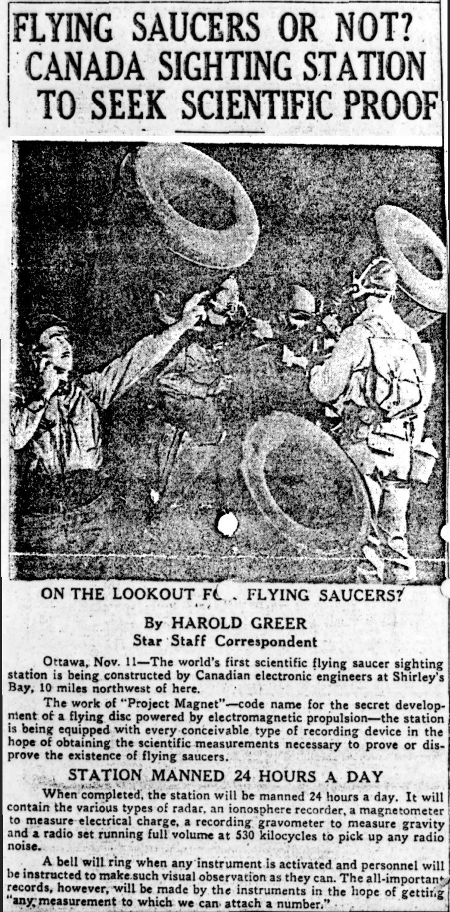
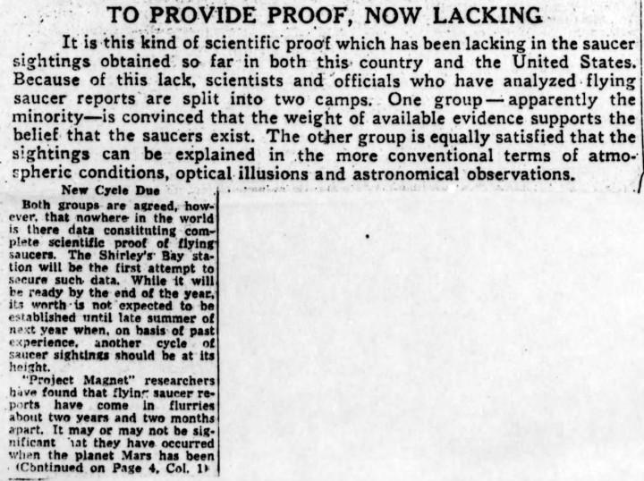
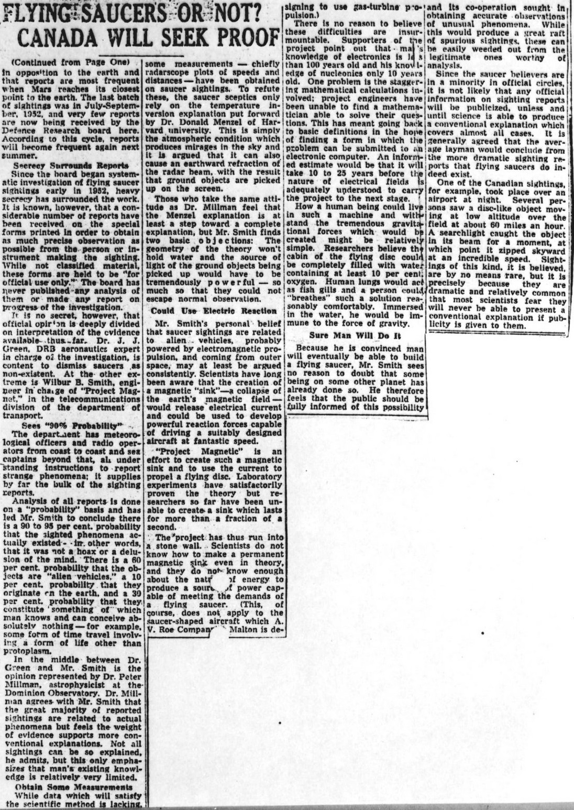

Greer Harold (Star staff correspondent): Toronto Star, 11 novembre 1953, p. 1.
| Home |
|---|
|  |
|  |
On the Lookout For the Flying Saucers?
Ottawa, Nov. 11—The world's first scientific flying saucer sighting station is being constructed by Canadian electronic engineers at Shirley's Bay, 10 miles northwest of here.
The work of "Project Magnet"—code name for the secret development of a flying disc powered by electromagnetic propulsion—the station is being equipped with every conceivable type of recording device in the hope of obtaining the scientific measurements necessary to prove or disprove the existence of flying saucers.
When completed, the station will be manned 24 hours a day. I will contain the various types of radar, an ionosphere recorder, a magnetometer to mesure electrical charge, a recording gravometer to measure gravity and a radio set running full volume at 530 kilocycles to pick up any radio noise.
A bell will ring when any instrument is activated and personnel will be instructed to make such visual observation as they can. The all-important records, however, will be made by the instruments in the hope of getting any measurement to which we can attach a number."
It is this lind of scientific proof which has been lacking in the saucer sightings obtained so far in both this country and the United States. Because of this lack, scientists and officials who have analyzed flying saucer reports are split into two camps. One group—apparently the minority—is convinced that the weight of available evidence supports the belief that the saucers exist. The other group is equally satisfied that the sightings can be explained in the more conventional terms of atmospheric conditions, optical illusions and astronomical observations.
Both groups are agreed, however, that nowhere in the world is there data constituting complete scientific proof of flying saucers. The Shirley's Bay station will be the first attempt to secure such data. While it will be ready by the end of the year, its worth is not expected to be established until late summer of next year when, on basis of past experience, another cycle of saucer sightings should be at its height.
"Project Magnet" researchers have found that flying saucer reports have come in flurries about two years and two months apart. It may or may not be significant that they have occured when the planet Mars has been in opposition to the earth and that reports are most frequent when Mars reaches its closest point to the earth. The last batch of sightings was in July-September, 1952, and very few reports are now being received by the Defence Research board here. According to this cycle, reports will become frequent again next summer.
|  |
Since the board began systematic investigation of flying saucer sightings early in 1952, heavy secrecy has surrounded the work. It is known, however, that a considerable number of reports have been received on the special forms printed in order to obtain as much precise observation as possible from the person or instrument making the sighting. While not classified material, these forms are held to be "for official use only." The board has never published any analysis of them or made any report on progress of the investigation.
It is no secret, however, that official opinion is deeply divided on interpretation of the evidence available thus far. Dr. J. J. Green, DRB aeronautics expert in charge of the investigation, is content to dismiss saucers as non-existent. At the other extreme is Wilbur B. Smith, engineer in charge of "Project Magnet," in the telecommunications divisions of the department of transport.
The department has meteorological officers and radio operators from coast to coast and sea captains beyond that, all under standing instructions to report strange phenomena; it supplies by far the bulk of the sighting reports.
Analysis of all reports is done on a "probability" basis and had led Mr. Smith to conclude there is a 90 to 95 per cent probability that the sighted phenomena actually existed - in other words, that it was not a hoax or a delusion of the mind. There is a 60 per cent probability that they originate on the earth, and a 30 per cent probability that they constitute something of which man knows and can conceive absolutely nothing—for example, some form of time travel involving a form of life other than protoplasma.
In the middle between Dr. Green and Mr. Smith is the opinion represented by Dr. Peter Millman, astrophysicist at the Dominion Observatory. Dr. Millman agrees with Mr. Smith that the great majority of reported sightings are related to actual phenomena but feels the weight of evidence supports more conventional explanations. Not all sightings can be so explained, he admits, but this only emphasizes that man's existing knowledge is relatively very limited.
While data which will satisfy the scientific method is lacking, some measurements — chiefly radarscope plots of speeds and distances — have been obtained on saucer sightings. To refute these, the saucer sceptics only rely on the temperature inversion explanation put forward by Dr. Donald Menzel of Harvard University. This is simply the atmospheric condition which produces mirages in the key and it is argued that it can also cause an earthward refraction of the radar beam, with the result that ground objects are picked up on the screen.
Those who take the same attitude as Dr. Millman feel that the Menzel explanation is at least a step toward a complete explanation, but Mr. Smith finds two basic objections: The geometry of the theory won't hold water and the source of light of the ground objects being picked up would have to be tremendously powerful — so much so that they could not escape normal observation.
Mr. Smith's personal belief that saucer sightings are related to alien vehicles, probably powered by electromagnetic propulsion, and coming from outer space, may at least be argued consistently. Scientists have long been aware that the creation a magnetic "sink"—a collapse of the earth's magnetic field — would release electrical current and could be used to develop powerful reaction forces capable of driving a suitably designed aircraft at fantastic speed.
"Project Magnetic" is an effort to create such a magnetic sink and to use the current to propel a flying disc. Laboratory experiments have satisfactorily proven the theory but researchers so far have been unable to create a sink which lasts for more than a fraction of a second.
The project has thus run into a stone wall. Scientists do not know how to make a permanent magnetic sink even in theory, and they do not know enough about the nature of energy to produce a source of power capable of meeting the demands of a flying saucer. (This, of course, does not apply to the saucer-shaped aircraft which A. V. Roe Company Malton is designing to use gas-turbine propulsion.)
There is no reason to believe these difficulties are insurmountable. Supporters of the project point out that man's knowledge of electronics is less that 100 years old and his knowledge of nucleonics only 10 years old. One problem is the staggering mathematical calculations involved: project engineers have been unable to find a mathematician able to solve their questions. This has meant going back of finding a form in which the problem can be submitted to an electronic computer. An informed estimate would be that it will take 10 to 25 years before the nature of electrical fields is adequately understood to carry the project to the next stage.
How a human being could live in such a machine and withstand the tremendous gravitational forces which would be created might be relatively simple. Researchers believe the cabin of the flying disc could be completely filled with water containing at least 10 per cent oxygen. Human lungs would act as fish gills and a person could "breathes" such a solution reasonably comfortably. Immersed in the water, he would be immune to the force of gravity.
Because he is convinced man will eventually be able to build a flying saucer. Mr. Smith sees no reason to doubt that some being on some other planet has already done so. He therefore feels that the public should be fully informed on this possibility and its co-operation sought in obtaining accurate observations of unusual phenomena. While this would produce a great raft of spurious sightings, these can be easily weeded out from the legitimate ones worthy of analysis.
Since the saucer believers are in a minority in official circles, it is not likely that any official information on sighting reports will be publicized, unless and until science is able to produce a conventional explanation which covers almost all cases. It is generally agreed that the average layman wold conclude from the more dramatic sighting reports that flying saucers do indeed exist.
One of the Canadian sightings, for example, took place over an airport at night. Several persons saw a disc-like object moving at low altitude over the field at about 60 miles an hour. A searchlight caught the object in its beam for a moment, at which point it zipped skyward at an incredible speed. Sightings of this kind, it is believed, are by no means rare, but it is precisely because they are dramatic and relatively common that most scientists fear they will never be able to present a conventional explanation if publicity is given to them.
| Home |
|---|

{kind=link}
{kind=link}
{kind=link}